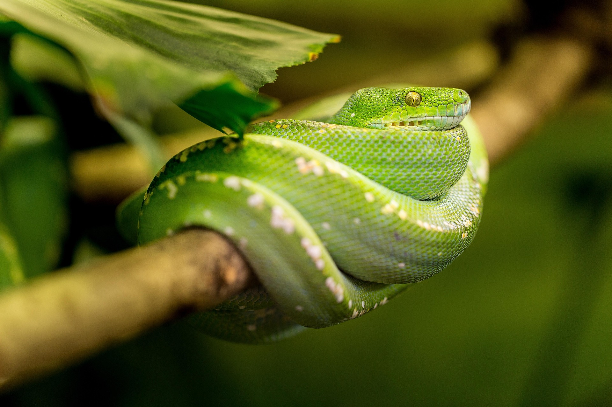

A Wikipedia-style website about snakes

Snakes are elongated, legless reptiles belonging to the suborder Serpentes. They are found on every continent except Antarctica. Some snakes are venomous, while others are non-venomous. Snakes play an important role in ecosystems by controlling rodent populations.
Many venomous snakes have triangular heads, heat-sensing pits, and long fangs. However, appearance alone is not always reliable. Never attempt to handle an unknown snake.
Non-venomous snakes usually kill prey by constriction or swallowing it alive. Most are harmless to humans.